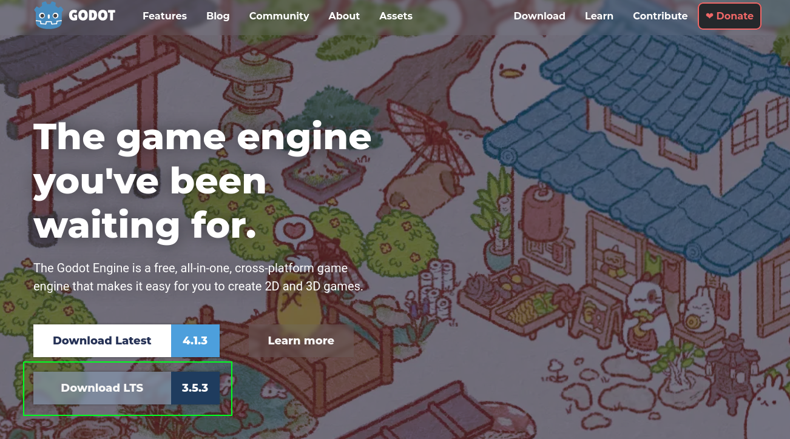
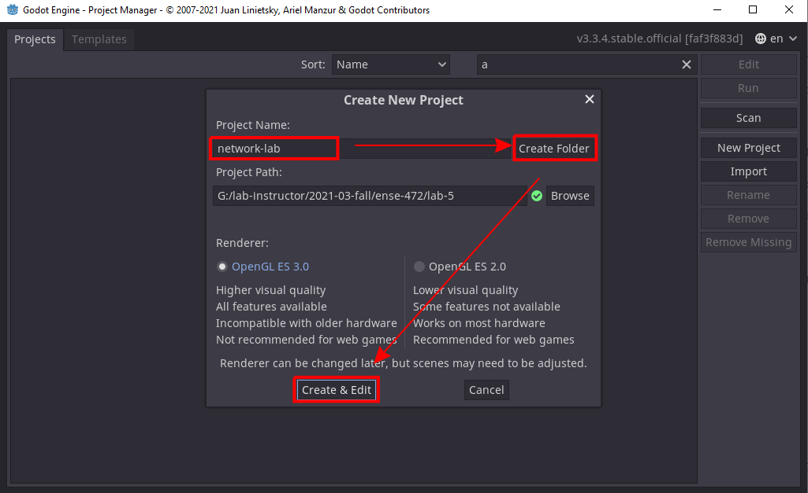
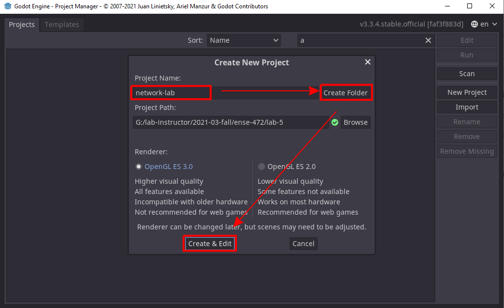
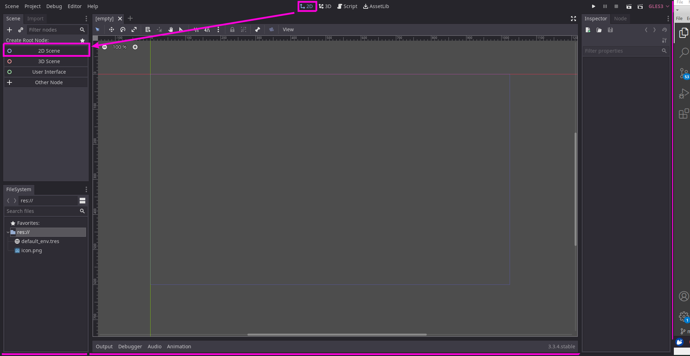
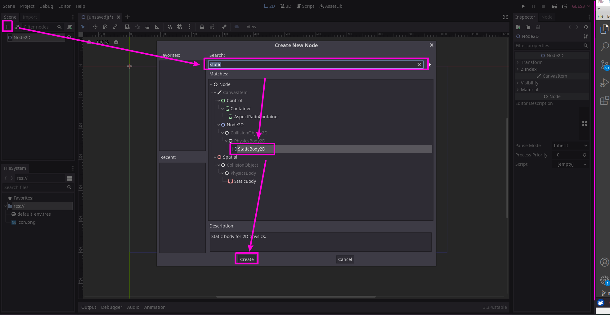
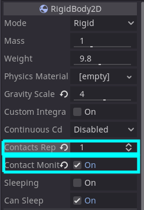
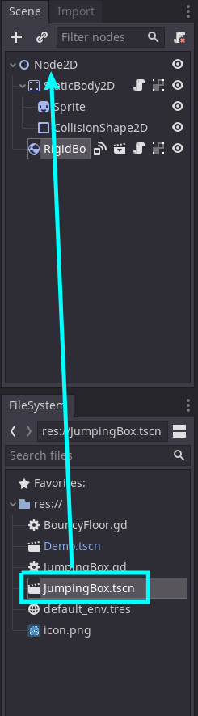
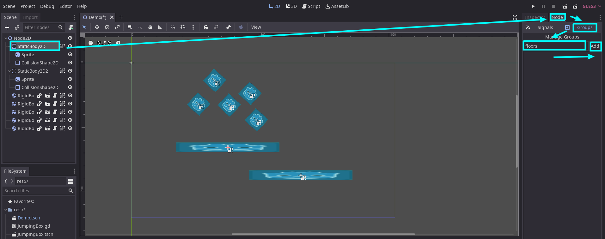
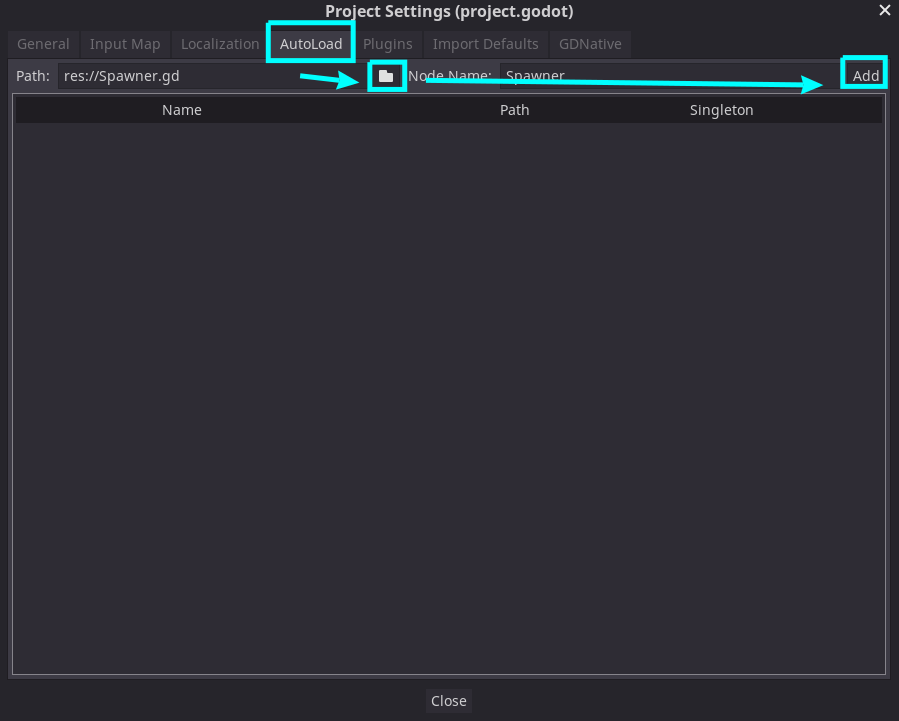

To get started, download the latest version of Godot. We are currently on version 3.5.1 (Nov 2022.)


 

Unzip, and run the executable. This is the entire game engine, IDE, everything in a single program. Cool!
- On MAC you may need to give Godot permissions to run in your system settings
- Leave the console window open, if you close it godot will close!

The UI of Godot is surprisingly dense, which every area being very useful, though it may not be apparent for what right away.
- The File Menu
- Standard things like saving, exporting, setting preferences
Project -> Export is useful for making binaries (but you need to download export templates first!)- In particular,
Project -> Project Settings is very important for setting the main scene, setting up AutoLoads, setting controls, etc.
- The Scene Tree
- This is where you compose the current scene of nodes
- FileSystem
- This is where you can see the assets imported into the current project
- Switch between 2D/3D/Code/Asset Library
- The 2D view is used for 2D games and UI
- The 3D view for 3D games
- Script for writing GDScript
- AssetLib for downloading community creations
- Center Stage - Drag around elements, or Code
- This is where you arrange elements, or code,
- Output, Debugger, Audio and Animation
- When debugging code, you’ll see important stuff down here
- Also useful when animating
- Play and Switch GL Mode
- This is where you can demo your project or scene
- Inspector and Node
- This is where you can set properties of the selected node
- You can also attach and modify resources here
- Additionally, you can attach signals in the
Node menu
Once you switch into script mode, the coding interface replaces center stage:

Overview and Help
- An overview of the Godot Engine
The official godot docs
Scenes and Nodes
The fundamental building blocks of the Godot engine are Nodes
Example: A simple physics example
- Ensure you are in 2D mode
- Add a root
Node2D by selecting 2D scene


- Attach a Sprite to the StaticBody2D

- Some nodes need resources ro function properly.
- Load in a sprite resource, using the default Godot icon PNG

-
Attach it a CollisionShape2D to the StaticBody2D

- Give it a collision shape resource
- This will be the boundaries for collisions

- Follow the same process with a RigidBody2D
- Attach a Sprite
- Load in a sprite resource, using the default PNG
- Attach it a CollisionShape2D
- Give it a collision shape resource
- Resize the collision shape extents to match the sprite
- Group together the StaticBody and its children so they move together
- Move the RigidBody2D on top of the StaticBody2D
-
If it is falling too slowly, you can increase the mass of the object in Scene -> RigidBody2D -> Inspector -> RigidBody2D -> Gravity Scale. Maybe 3 or 4 is okay?
- Duplicate a few of the RigidBody2Ds and move them around and rotate
- Ctrl D, and use these tools for positioning
- Make the static body bigger to catch them
-
Play again! Neat

Getting started with nodes
GD Script
The default scripting language used in Godot is GDScript.
- The syntax of this language is very similar to python
- Let’s use code to “jump” one of our RigidBodies when “Space” is pressed.
First attach a script to the RigidBody

Attached scripts are akin to classes, so we should give it an appropriate name:

This is GDSCript. It is similar to Python.
Note that our class extends RigidBody2D. This is because we attached it to a RigidBody2D. Through inheritance, we can use any of the properties and methods available in that class.
The two main entry points are the _ready, and _process functions, which are automatically invoked by the engine when the object is created (_ready) and every frame the object lives (_process(delta)). We are going to add another function called _physics_process(delta). This is similar to process, but is called each time the physics engine updates.
To see which parts of the RigidBody we can access, check out the docs
We’ll directly apply a
extends RigidBody2D
func _physics_process(delta):
if Input.is_action_just_pressed("ui_accept"):
linear_velocity = Vector2(0,-500)
Note, these controller buttons can be customized from Project -> Project Settings -> Input Map
Also note that Vector2’s are coordinate pairs corresponding to x,y pairs, where the origin is in the top left of the screen.
GDScript Basics
Signals
In Godot, Signals implement the observer pattern
- You can find signals attached to certain objects, which are observable states
- You can wire them up to scripts so that, when that signal is called, you can handle that event
- This is also similar to event systems with callback
- These are found in
Node Pane -> Signals
- Let’s wire the
body_entered signal on the RigidBody2D to itself:
- Let’s use a signal to detect when the RigidBody collides with the floor, and when it does, bounce it back up:

Let’s add some code too:
# make sure the name matches the name generated when connecting the signal!
func _on_RigidBody2D4_body_entered(body):
if body is StaticBody2D:
apply_impulse(Vector2(0,0), Vector2(0,-500))
Finally, we need to configure the RigidBody2D to report collisions, since it does not by default:

Signals
Custom Scenes
We’ve done a lot of configuration work on the RigidBody2D. We should break it into it’s own scene for reuse:
Right Click -> Save Branch as Scene
- Save it as
JumpingBox.tscn
- Remove the other instances of RigidBody2Ds, and replace them with JumpingBoxes
With the combination of the scene and the script, this now acts as a self-contained class!

Cool, now all of our boxes are jumping!
Groups
What if we had several different static bodies, and we wanted to bounce on them all?
We could put them in a group to easily find them:

Now we can modify our code to only work for the group.
func _on_RigidBody2D4_body_entered(body):
var floors = get_tree().get_nodes_in_group("floors")
if body in floors:
apply_impulse(Vector2(0,0), Vector2(0,-500))
This would be useful if we had other StaticBodies, for example, walls
Groups
AutoLoads
AutoLoads are scripts which are loaded at the time the game is instantiated. There is thus one globally accessible reference. This is an implementation of the Singleton design pattern.
We can access the AutoLoads from the menu Project -> Project Settings -> AutoLoad
Let’s create an AutoLoad script for spawning blocks at regular intervals:
Create a new GDScript Spawner.gd, and add in:
extends Node
var timer
var spawn_interval = 1.0
var jumping_box_scene = preload("res://JumpingBox.tscn")
func _ready():
timer = Timer.new()
timer.set_wait_time(spawn_interval)
timer.set_one_shot(false)
timer.connect("timeout", self, "_on_timer_timeout")
timer.set_autostart(true)
add_child(timer)
func _on_timer_timeout():
var y = rand_range(0,-100)
var x = rand_range(300, 900)
var new_block = jumping_box_scene.instance()
new_block.position = Vector2(x,y)
get_tree().get_root().add_child(new_block)
And attach the script like

You could stop the time from any script like:
var Spawner = get_node("/root/Spawner")
Spawner.timer.stop()
Of if you prefer, you can add PlayerVariables directly to the local namespace by Enabling the singleton.
Singletons (AutoLoad)